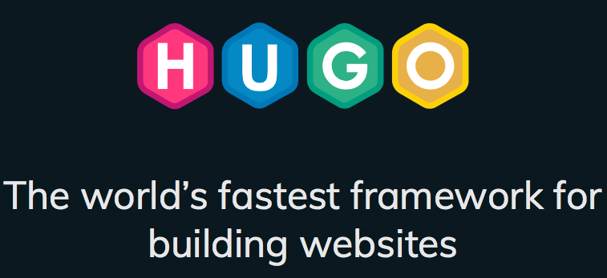
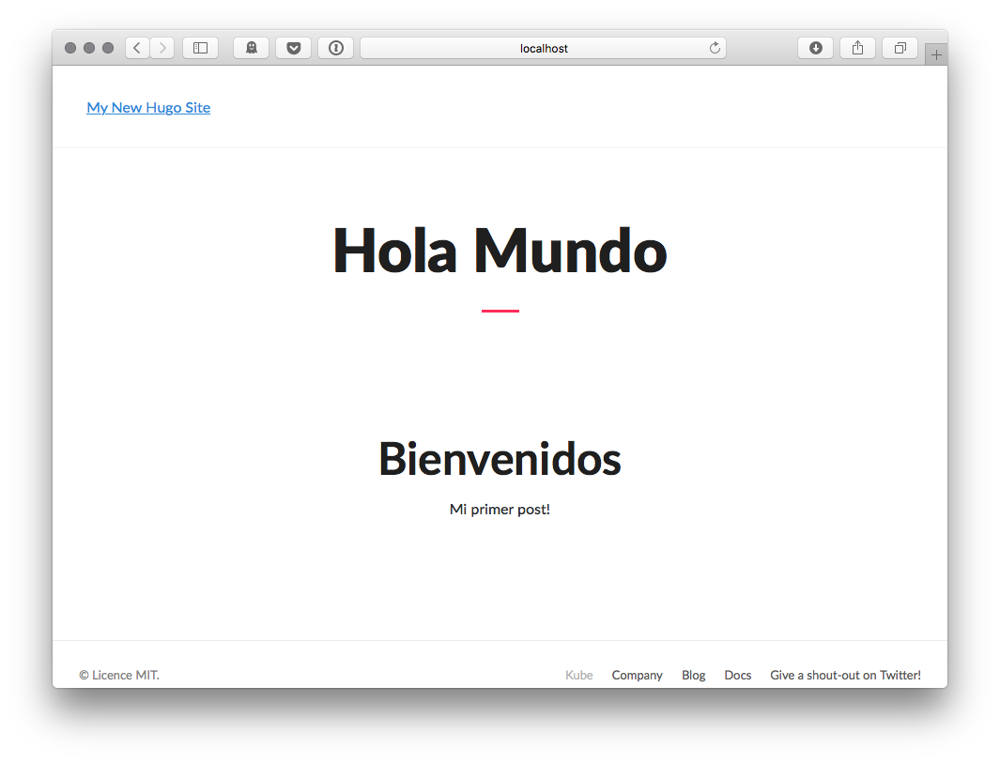
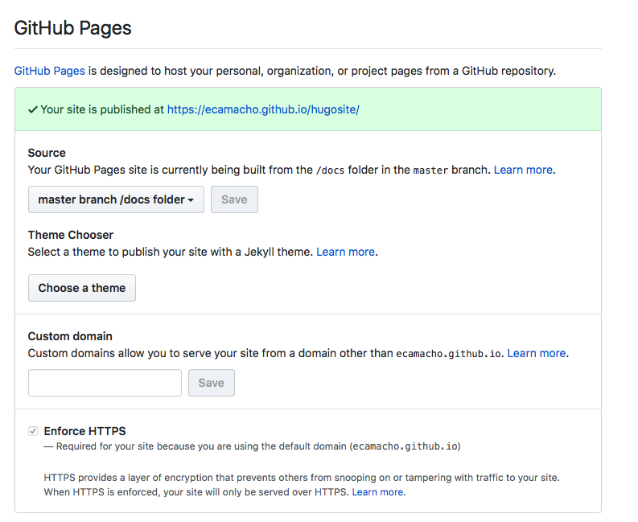
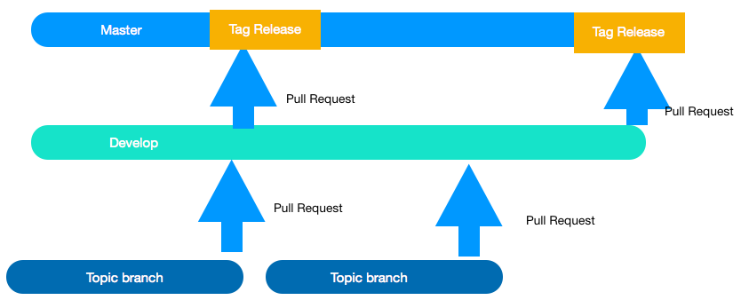
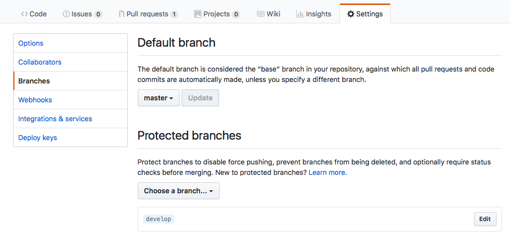
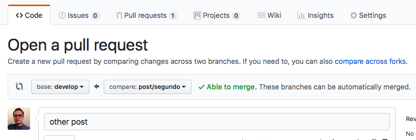
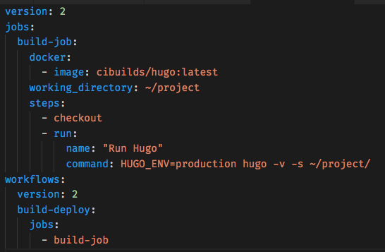
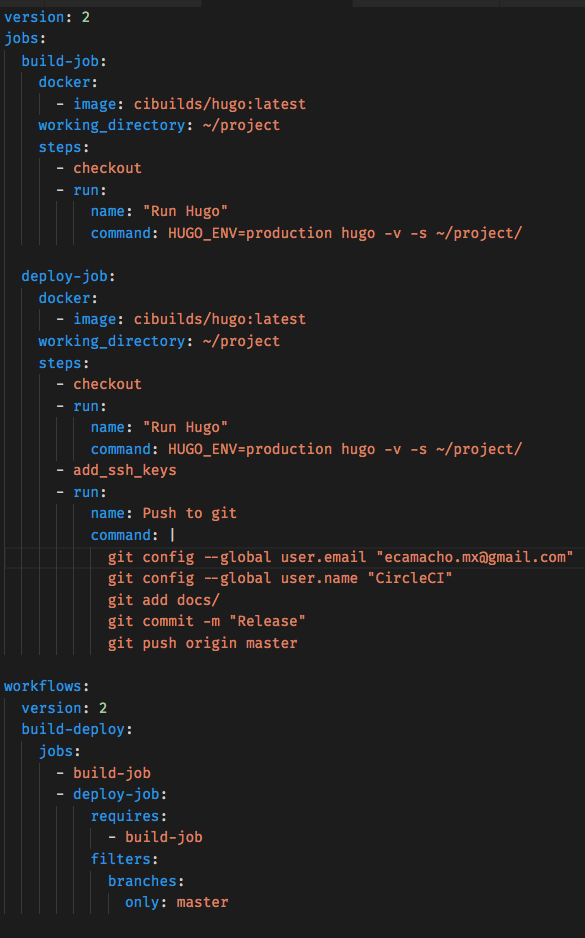

¿Cómo despliegas tu proyecto en producción?
¿Cómo sabes qué cambios se subieron a producción y cuándo?
¿Quién es el responsable de los despliegues?
¿Y si algo sale mal? ¿Cómo haces un rollback?
El objetivo de este ejercicio es crear un sitio web estático y publicarlo en github-pages

hugo new myblog
Copia la url del repo git del tema que te guste y ve a línea de comandos
cd themes
# aqui va la url del tema
git clone git@github.com:MunifTanjim/minimo.git
# el nombre de la carpeta del tema
cd minimo
# borramos la config de git del tema
# no será necesaria y puede darte errores
rm -rf .git
Busca el archivo config.toml y edítalo
Cambiaremos un par de valores
languageCode = "en-us"
title = "My New Hugo Site"
# cambiamos al directorio que necesita Github
publishDir = "docs"
# Ponemos el nombre de la carpeta de nuestro tema
theme = "minimo"
Ve de nuevo a la carpeta padre cd ..
Ahora
hugo new post/hola_mundo.md
Hugo usa Markdown que convierte a HTML
Abre el archivo creado (content/post/hola_mundo.md)
---
title: "Hola Mundo"
date: 2018-01-24T09:28:04-06:00
draft: false
---
# Hola Mundo
Este es mi primer post
hugo server

Crea un repositorio en tu Github con el mismo nombre que tu proyecto Hugo
Agrega tu proyecto al repo
git init .
git add -A
git commit -m "project creation"
git remote add origin remote repository-URL
git push -u origin remote
Ahora vamos a generar el sitio en tu máquina y subirlo a GitHub
El comando hugo transforma tus posts a HTML y los pone en la carpeta docs
hugo
git add .
git commit -m "static site generated"
git push origin master
Por último, vamos a configurar GitHub pages. En tu repo, en Settings
Copia la url de lo que será tu sitio
Un último paso. En tu proyecto, vamos a cambiar la URL del sitio
Edita el archivo config.toml, commit y push
baseURL = "https://ecamacho.github.io/hugosite/"
languageCode = "en-us"
title = "My New Hugo Site"
publishDir = "docs"
theme = "minimo"
Ve a la url de tu sitio y ya debe estar publicado en GitHub Pages
GitHub Pages publica automáticamente todo lo que tienes en el directorio docs en el branch master
Pongamos un flujo que evite publicaciones no deseadas
1. Nadie publica directo a master
2. Nadie publica directo a develop
3. Cada cambio debe ir en un branch aparte que se sube a GitHub
4. Cada cambio que se desee publicar se hace mediante un Pull Request a develop
5. Cuando se quiera publicar el sitio, se hace un PR a Master desde Develop
6. Por cada merge en Master, se debe generar un Tag con la nueva versión
Crea el branch develop en tu línea de comandos y súbelo a GitHub
git checkout -b develop
git push origin develop
Ahora en GitHub, ponemos a develop como branch protegido
Ahora publiquemos un post nuevo en nuestro blog
1. Crea un branch para el nuevo post
git checkout -b post/segundo
2. Creamos un post nuevo con Hugo
hugo new post/segundo.md
3. Edítalo y asegúrate de poner draft = false
4. Genera tu sitio con el comando
hugo
5. Commit y Sube tu branch a GitHub
git add .
git commit -m "second post"
git push origin post/segundo
6. Creamos un Pull Request de post/segundo a develop
7. Dale Merge
8. Creamos un PR de develop a master
9. Dale Merge. En este momento el sitio se publica
10. Por último, creamos un Release desde GitHub
CI es construir tu proyecto y ejecutar sus pruebas de forma automática cada que se suba un cambio al repositorio.
Permite eliminar errores humanos
Permite tener builds reproducibles
Permite encontrar errores de forma temprana
Existe muchas opciones, gratuitas, open source, de pago, en la nube, etc
Primero crearemos un archivo de configuración en nuestro proyecto
git checkout -b feature/circleci
Ahora crea una carpeta llamada .circleci (recuerda el punto) y dentro el archivo config.yml
Súbelo a master (recuerda: push de tu branch, PR a develop, merge, PR a master, merge)
Ahora ve a circleci.com e inicia sesión con tu cuenta de GitHub
Elige tu proyecto en la lista y dale build.
Ahora con cada push a tu proyecto, se ejecutará circle CI
Una vez que tienes CI, el siguiente paso es que la tarea de desplegar tu sitio a los diferentes ambientes que tengas sea automática
El objetivo de la entrega continua es que esté libre de errores humanos y que se fácilmente reproducible cuando cambias de ambiente
En nuestro caso, debemos:
Crea un nuevo branch en tu proyecto
git checkout -b feature/entrega_continua
Agregaremos un nuevo paso a .circleci/config.yml

Commit, push, pull request
Pero, nos falta un paso...
Por defecto, la llave ssh que agrega CircleCI es de sólo lectura. Necesitamos actualizar una de escritura
Hemos configurado un proyecto con CI y CD.
Tu reto: automatiza la creación de Tags con cada release.